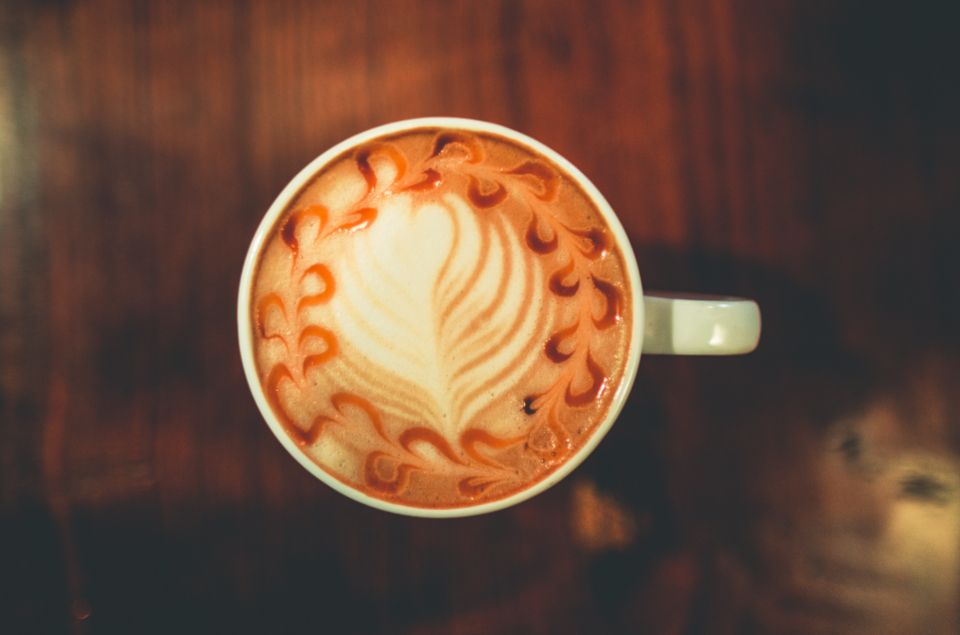
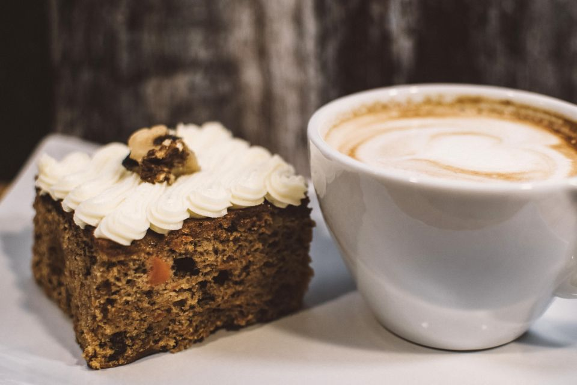
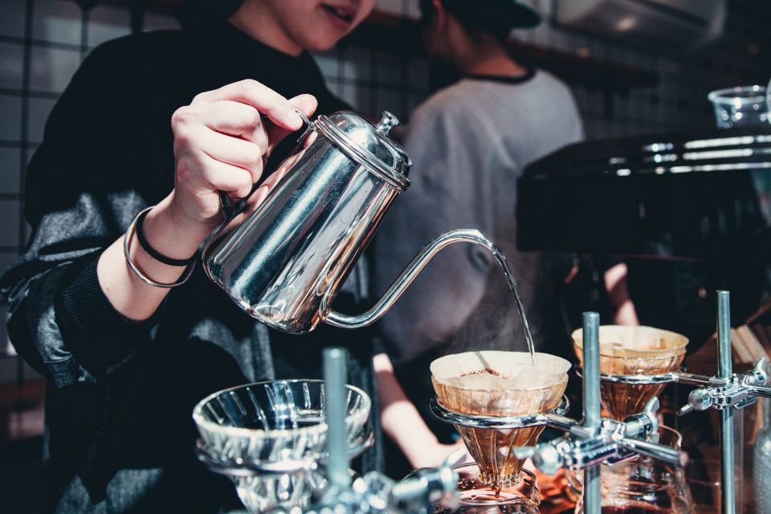

Little Wren Café
Our Story
Café & bakery · Fremantle
Our story
Your favourite corner of town
Little Wren opened on South Terrace in 2019 in a former bookshop. We kept the old shelves, added a coffee machine and filled the window with cakes.
We buy our coffee from a roastery just down the road, our eggs from a farm in the hills and our bread from the bakery round the corner. Everything else we make ourselves.
Grab a takeaway on the way to work, or settle in by the window with the paper. Dogs get a treat and a bowl of water.


Reviews
What people say
★★★★★“Best flat white on the strip and the banana bread is huge. Lovely staff too.”Sarah M., Fremantle
★★★★★“Our Saturday brekkie spot. The big brekkie is cooked perfectly every time.”Tom & Bec
★★★★★“Came in after a swim and left happy. Dog-friendly as well.”Priya K.
Example reviews for this demo website.